Manuale utente Firmware 2.2.1(4) [10 nov 2025]
Introduzione
OpenSprinkler è un controller open-source per irrigazione, basato su web, progettato come sostituto immediato dei controller tradizionali privi di connettività web. I suoi principali vantaggi includono un'interfaccia utente intuitiva, l'accesso remoto e il controllo intelligente dell'irrigazione basato sul meteo. È ideale per abitazioni e aziende in applicazioni come irrigazione di prati e giardini, irrigazione di piante, irrigazione a goccia, idroponica, ecc.
L'hardware OpenSprinkler documentato qui è disponibile in tre famiglie di prodotto:
- OpenSprinkler v3 – Dispone di WiFi integrato, due porte sensore indipendenti e un modulo Ethernet cablato opzionale. È completamente assemblato e precaricato con il firmware.
- OpenSprinkler Pi (OSPi) – Alimentato da un Raspberry Pi (RPi), richiede un po' di assemblaggio (ad esempio il collegamento del RPi) e l'installazione del firmware.
- OpenSprinklerPro – Si collega secondo gli stessi principi di OpenSprinkler v3.0-3.3 per valvole, COM, sensori e alimentazione, ma esegue il firmware OpenSprinklerShop più evoluto per ESP32-C5 con estensioni Pro. La linea firmware attuale OpenSprinklerShop/OpenSprinklerPro è 2.4.0(199).
Ogni controller fornisce 8 zone, con possibilità di espansione tramite espansori di zona (ognuno aggiunge 16 zone): OpenSprinkler v3 supporta fino a 72 zone e OSPi supporta fino a 200 zone. Inoltre, OpenSprinkler v3 è disponibile in tre modelli di alimentazione:
- Alimentato in AC – Include una morsettiera arancione (v3.0-3.3) oppure un connettore di alimentazione cilindrico rosso (v3.4). Richiede un trasformatore 24VAC (NON incluso di default; acquistabile come accessorio, oppure usare un proprio trasformatore 24VAC).
- Alimentato in DC – Include un connettore di alimentazione cilindrico nero (v3.0-3.3) oppure un connettore USB-C (v3.4). Per il Nord America è incluso un alimentatore compatibile. Può funzionare con 6V–24VDC, incluso un pannello solare 12VDC. Pur avendo alimentazione in ingresso DC, è progettato per azionare valvole di irrigazione 24VAC, oltre a valvole DC non bistabili.
- LATCH – Include un connettore di alimentazione cilindrico nero e un adattatore 7.5VDC per il Nord America. È progettato specificamente per l'uso solo con elettrovalvole bistabili.
Novità di questo firmware
- Supporto per OpenSprinkler v3.4 alimentato in DC, il primo OpenSprinkler con USB-C. Supporta USB PD (Power Delivery) tramite CH224 e consente una tensione PD definita dall'utente.
- Esecuzione preventiva per azioni manuali: le esecuzioni manuali delle stazioni, i programmi Run-once e i programmi avviati manualmente ora supportano opzioni di coda specificate dall'utente:
- Accoda: esegui dopo gli altri
- Inserisci all'inizio: esegui ora e metti in pausa gli altri
- Sostituisci: esegui ora e ferma gli altri (comportamento predefinito nei firmware precedenti).
- Backend GPIO OSPi: passaggio da
libgpioalgpio, per un'API più semplice, compatibile con Raspbian Trixie, ed evitare modifiche incompatibili dilibgpiodv2. - Letture di corrente più fluide: aggiunto filtro a media mobile esponenziale (EMA) per un rilevamento stabile della corrente.
- URL script meteo flessibile: supporto per
http/httpsesplicito e porta personalizzata, rendendo semplice l'uso di un servizio meteo personalizzato. - Pagine statiche ottimizzate: la homepage AP e le pagine di aggiornamento firmware vengono servite come HTML minificato e compresso per tempi di caricamento più rapidi e ingombro ridotto.
Interfaccia hardware
OpenSprinklerPro
OpenSprinklerPro usa la piattaforma ESP32-C5 con WiFi 6, BLE e varianti firmware Zigbee o Matter. Valvole, COM, sensori e alimentazione si collegano come su OpenSprinkler v3.0-3.3; questo schema mostra la posizione dei connettori e le interfacce Pro aggiuntive. Il software è il firmware OpenSprinklerShop più evoluto con funzioni Pro, non il vecchio firmware di base descritto dal manuale upstream originale.

OpenSprinkler v3.4 (nuovo)

OpenSprinkler v3.0-3.3

OpenSprinkler Pi (OSPi)
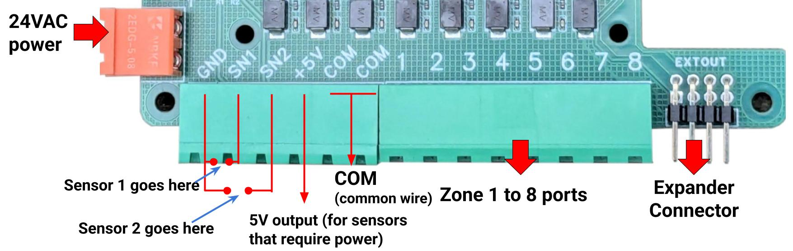
Schema di cablaggio delle zone
Il diagramma seguente mostra come collegare le valvole sul controller principale e sugli espansori.
Nozioni di base
- Ogni solenoide di valvola ha due fili. Raccogliere un filo da ogni valvola (sul controller principale e su eventuali espansori) e unirli in un filo COM (comune). Collegare questo filo COM alla porta COM del controller (NON usare GND).
- OpenSprinkler ha due porte COM: sono collegate internamente, quindi è possibile usarne una qualsiasi.
- L'altro filo di ogni valvola va alla rispettiva porta di zona (1, 2, 3, ...).
Polarità
- Le valvole AC non hanno polarità — ciascun terminale può essere il filo COM o il filo di zona.
- Le valvole bistabili sono polarizzate — collegare il filo positivo (di solito rosso) a COM e il filo negativo (di solito nero) a una porta di zona.
- Anche alcune valvole DC non bistabili sono polarizzate. Anche in questo caso, positivo → COM, negativo → zona.
Valvola master / relè pompa
- Se si dispone di una valvola master o di un relè di avvio pompa, collegarlo a qualsiasi porta di zona — OpenSprinkler usa zone master/pompa definite via software, quindi è possibile configurare quali zone agiscono da master.
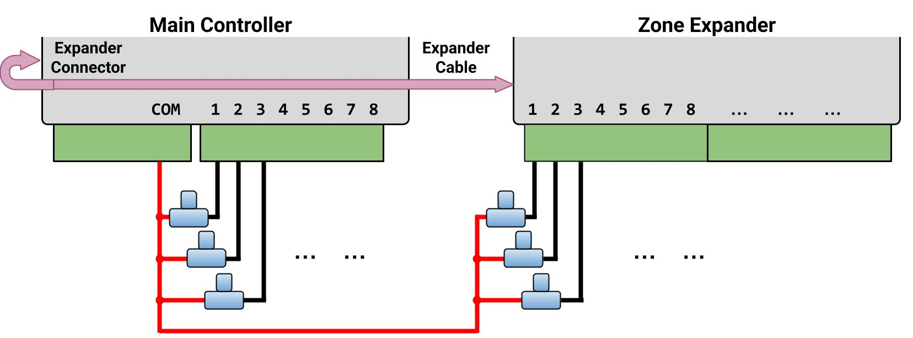
Installazione
Alimentazione AC (utenti internazionali)
Per OpenSprinkler alimentato in AC, è necessario usare un trasformatore 24VAC che corrisponda allo standard di tensione di rete del proprio paese. Un trasformatore incompatibile può danneggiare il controller. Se non è disponibile un trasformatore 24VAC adatto, considerare invece OpenSprinkler alimentato in DC (ingresso 6–24VDC; v3.4 usa USB-C). Non collegare mai la tensione di rete direttamente al controller.
OpenSprinkler NON è impermeabile
Se installato all'aperto, montarlo all'interno di un contenitore resistente alle intemperie.
Guide video
Guide video e tutorial sono disponibili sul sito di supporto OpenSprinkler.
Passo 1: Preparazione
Etichettare con cura e rimuovere i fili dal controller di irrigazione esistente man mano che lo si scollega. In genere si trovano:
- Fili di alimentazione (se si prevede di riutilizzare l'alimentatore esistente)
- Un filo COM (comune)
- Uno o più fili di zona
- (Opzionale) Un filo zona master / relè avvio pompa
- (Opzionale) Fili per sensore pioggia / suolo / flusso
Passo 2: Cablaggio di OpenSprinkler
Fare riferimento alle sezioni Interfaccia hardware e Schema di cablaggio delle zone sopra.
OpenSprinkler usa morsettiere rimovibili per facilitare il cablaggio. Per staccare una morsettiera, afferrare saldamente un'estremità, muoverla delicatamente e tirarla fuori. Inserire completamente i fili, quindi serrare bene le viti.
Alimentazione:
- OpenSprinklerPro: collegarlo come OpenSprinkler v3.0-3.3. Per i modelli AC, collegare i fili 24VAC alla morsettiera di alimentazione; per cablaggi di tipo DC/Latch, seguire le note di polarità v3.0-3.3 DC/Latch. Il software Pro e l'interfaccia utente sono più recenti e includono funzioni OpenSprinklerPro aggiuntive.
- OpenSprinkler v3.4 AC: collegare il trasformatore 24VAC al jack cilindrico rosso.
- Se il trasformatore ha fili scoperti, usare l'adattatore morsetto-a-spina incluso.
- OpenSprinkler v3.0-3.3 AC: collegare i fili 24VAC alla morsettiera arancione.
- L'AC non ha polarità, quindi i due fili non hanno distinzione.
- OpenSprinkler v3.4 DC: collegare il cavo USB-C alla porta USB-C (PWR).
- OpenSprinkler v3.0-3.3 DC e Latch: inserire l'adattatore DC nel jack cilindrico nero.
- Notare che il terminale COM è positivo(+). Se i fili della valvola sono polarizzati, il positivo va a COM e il negativo va a una zona.
Sensori:
- Collegare i fili di segnale del sensore a SN1 + GND (oppure SN2 + GND se si usa un secondo sensore).
- OpenSprinkler usa GND (NON COM) come terminale comune per gli ingressi sensore. NON collegare i fili di segnale del sensore a COM.
- Su un modello alimentato in AC, se un sensore richiede alimentazione 24VAC (ad es. sensori wireless), è possibile collegare i suoi fili di alimentazione a COM e GND, che forniscono 24VAC.
- I modelli alimentati in DC e Latch NON erogano 24VAC e quindi non possono alimentare questi sensori.
Per ulteriori dettagli su sensori specifici (pioggia/suolo/flusso), consultare Configurazione sensori.
Passo 3: Espansori di zona (opzionale)
Spegnere prima di cablare gli espansori
Spegnere sempre il controller principale prima di apportare modifiche agli espansori (collegamento, scollegamento, riconfigurazione).
Verificare la porta corretta
Controllare lo Schema di cablaggio delle zone per verificare che sia collegato alla porta corretta. NON collegarlo alla porta contrassegnata Ether (quella è per il modulo Ethernet)!
-
Con il controller principale spento, collegare un'estremità del cavo dell'espansore alla porta Zone Expander di OpenSprinkler (con chiave; entra in un solo verso).
-
Collegare l'altra estremità del cavo:
- OpenSprinkler v3: a uno dei due lati dell'espansore (le due porte sono equivalenti). Per più espansori, collegarli con cavi aggiuntivi.
- OpenSprinkler Pi (OSPi): alla porta IN dell'espansore. Per più espansori, collegarli in cascata seguendo i collegamenti OUT → IN.
- Impostare l'indice:
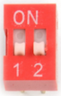
- Per OpenSprinkler v3, è NECESSARIO impostare un indice univoco (1-4) per ogni espansore, usando il DIP switch sul retro (vedere l'immagine a destra).
1stespansore: indice1(DIP switch:DOWN DOWN)2ndespansore: indice2(UP DOWN)3rdespansore: indice3(DOWN UP)4thespansore: indice4(UP UP).
- Per OSPi: non c'è DIP switch - l'indice dell'espansore è implicito nell'ordine in cui gli espansori sono collegati in cascata.
- Per OpenSprinkler v3, è NECESSARIO impostare un indice univoco (1-4) per ogni espansore, usando il DIP switch sul retro (vedere l'immagine a destra).
- Mappatura zone:
- Controller principale: zone
1-8 1stespansore: zone9-242ndespansore: zone25-403rdespansore: zone41-564thespansore: zone57-72
- Controller principale: zone
Selezionare il numero di zone: il firmware rileva automaticamente l'indice più alto dell'espansore, ma è comunque necessario impostare manualmente il numero totale di zone nelle impostazioni software. È possibile abilitare più zone di quelle fisicamente disponibili, per usarle come zone virtuali (Remote/HTTP(S)/RF). Vedere Tipi di stazione.
Passo 4: Configurazione WiFi / Ethernet
WiFi (tutte le versioni OpenSprinkler v3)
- Al primo avvio (o dopo il reset WiFi), OpenSprinkler si avvia in modalità AP (Access Point), trasmettendo un SSID come
OS_xxxxxxmostrato sul LCD. Collegare il telefono/computer a questo SSID aperto.- Su Android: se compare un avviso "WiFi senza Internet", toccare Accetta per rimanere connessi.
- Aprire un browser e andare a
192.168.4.1per accedere alla pagina Configurazione WiFi. Seguire le istruzioni. In particolare, selezionare (o inserire manualmente) l'SSID della WiFi domestica e la relativa password (questa è la password WiFi del router, NON la password di OpenSprinkler!). I campi BSSID e Channel vengono compilati automaticamente, ma possono essere lasciati vuoti se si preferisce. - Fare clic su Connect. Dopo una connessione riuscita, il controller si riavvierà in modalità WiFi Station.
- Premere il pulsante B1 su OpenSprinkler per visualizzare l'IP del dispositivo assegnato dal router. Digitare l'IP del dispositivo in un browser o nell'app mobile OpenSprinkler per accedere all'interfaccia web.
- La password predefinita del dispositivo è opendoor. Per sicurezza, cambiarla immediatamente dopo la configurazione.
Ethernet cablata (OpenSprinkler v3.2 e successive)
- Spegnere il controller principale.
- OpenSprinkler v3.4: inserire saldamente il connettore del cavo piatto nella porta del controller contrassegnata Ether (si trova sul lato destro del controller).
- NON collegarlo alla porta contrassegnata Expander - quella è SOLO per l'espansore di zona!
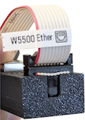
- NON collegarlo alla porta contrassegnata Expander - quella è SOLO per l'espansore di zona!
- OpenSprinkler v3.2-3.3: inserire saldamente il connettore del cavo piatto nel modulo Ethernet come mostrato a destra (con chiave; entra in un solo verso).
- Collegare un cavo Ethernet RJ45 dalla rete al modulo.
- Accendere il controller. Rileverà la rete e si connetterà automaticamente.
Reset WiFi
- Per rientrare in modalità AP senza cancellare altre impostazioni:
- Con il controller acceso, premere B3+B2 (prima premere B3, poi tenendo premuto B3 premere rapidamente B2, come
Ctrl+C), e tenere premuto finché compare Reset to AP mode?. - Fare clic su B3 per confermare.
- Con il controller acceso, premere B3+B2 (prima premere B3, poi tenendo premuto B3 premere rapidamente B2, come
- È anche possibile reimpostare il WiFi dall'app/interfaccia web in:
- Dalla homepage: Edit Options → Reset → Reset WiFi.
- Se nessuno dei metodi sopra funziona, è necessario eseguire un reset di fabbrica (vedere sotto).
Reset password dispositivo
Se si dimentica la password del dispositivo, è possibile bypassarla usando i pulsanti:
- Spegnere il controller.
- Accenderlo e, non appena appare il logo OpenSprinkler, premere e tenere premuto B3. Continuare a tenere premuto finché sul LCD compare Setup Options.
- Fare clic ripetutamente su B3 finché compare Ignore Password. Fare clic su B1 per impostarlo su Yes.
- Premere e tenere premuto B3 finché il controller si riavvia.
Ora è possibile accedere all'interfaccia senza password. Per sicurezza, impostare subito una nuova password e riportare Ignore Password su No.
Reset di fabbrica
- Spegnere il controller.
- Accenderlo e, non appena appare il logo OpenSprinkler, premere e tenere premuto B1. Continuare a tenere premuto finché sul LCD compare Reset?
- Confermare che la risposta sia Yes, quindi premere e tenere premuto B3 finché il controller si riavvia.
Tutte le impostazioni verranno cancellate e riportate ai valori di fabbrica.
Display LCD e pulsanti
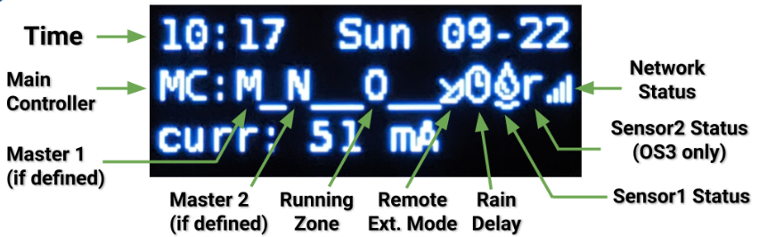
- Master 1 (se abilitato) viene mostrato come lettera
M; e Master 2 comeN. - Per impostazione predefinita, il LCD mostra lo stato delle prime 8 zone sul controller principale (
MC). Ogni zona in esecuzione viene visualizzata con un'animazione a tre lettere:. o O - Fare clic su B3 per scorrere ogni gruppo di 8 zone (
E1,E2,E3...) sugli espansori. - Quando nessuna zona è in esecuzione, in alto viene mostrato un messaggio
(System Idle). - Quando il controller è in modalità Remote Extension, viene mostrata un'icona radar 📡.
- Quando Pause Queue o Rain Delay è attivo, viene mostrata un'icona orologio 🕒.
- Se Sensor 1 è configurato, viene mostrata una lettera per indicarne il tipo:
r: sensore pioggias: sensore suolop: interruttore programmaf: sensore di flusso- Un sensore pioggia attivato viene mostrato come 🌧️, e un sensore suolo attivo come 💧.
- Se Sensor 2 è configurato, la sua visualizzazione seguirà la stessa notazione di Sensor 1.
Mentre il controller è in funzione, i pulsanti eseguono le seguenti funzioni:
| Pulsante | Funzione |
|---|---|
| Click B1 | Visualizza indirizzo IP del dispositivo, porta e stato OTC |
| Click B2 | Visualizza indirizzo MAC del dispositivo |
| Click B3 | Passa tra il controller principale (MC) e ogni gruppo di 8 zone espanse( E1, E2, E3 ...). |
| Hold B1 | Ferma immediatamente tutte le zone |
| Hold B2 | Riavvia il controller |
| Hold B3 | Avvia manualmente un programma esistente o di test |
| B1+B2 | Tenere premuto B1, quindi mentre lo si tiene premuto premere B2, come Ctrl+C. Visualizza l'IP del gateway (router) |
| B2+B1 | Visualizza l'IP esterno (WAN) |
| B2+B3 | Visualizza il timestamp dell'ultima risposta del server meteo |
| B3+B2 | Per OpenSprinkler v3: reset in modalità AP (per riconfigurazione WiFi) |
| B1+B3 | (Solo test interni) Avvia un programma di test rapido (2s per zona) |
| B3+B1 | Visualizza il timestamp dell'ultimo riavvio di sistema e il motivo del riavvio |
Durante l'avvio, mentre viene mostrato il logo OpenSprinkler, se viene premuto uno dei pulsanti sotto:
- B1: avvia Factory Reset.
- B2: avvia Internal Test Mode.
- B3: avvia Setup Options.
Panoramica dell'interfaccia web
L'interfaccia web di OpenSprinkler funziona su telefoni, tablet e computer, consentendo di visualizzare lo stato, regolare le impostazioni, controllare i log e modificare i programmi da qualsiasi browser web moderno o tramite l'app mobile OpenSprinkler gratuita (cercare OpenSprinkler nel proprio app store).
Guide video
Guide video e tutorial sono disponibili sul sito di supporto OpenSprinkler.
Accesso locale
- Sul controller, premere il pulsante B1 per trovare il suo IP dispositivo e la porta HTTP. Indichiamo l'IP come
os-ip(ad es.192.168.1.122). - Aprire un browser e visitare
http://os-ip(ad es.http://192.168.1.122). Se la porta HTTP è stata cambiata dal valore predefinito80, includerla nell'URL (ad es.http://os-ip:8765). - La password predefinita del dispositivo è opendoor. Per sicurezza, cambiarla al primo utilizzo.
- Quando si usa l'app mobile OpenSprinkler, scegliere Manually Add Device. Inserire l'IP del dispositivo.
- L'accesso al controller tramite IP funziona finché ci si trova sulla stessa rete locale.
Accesso remoto (tramite OTC)
- Per accedere al controller da remoto, configurare prima un token OpenThings Cloud (OTC).
- Nell'app mobile OpenSprinkler, scegliere Manually Add Device e incollare il token OTC invece di un IP.
- Per accedere da remoto usando un browser web, visitare
cloud.openthings.io/forward/v1/tokendovetokenè il token OTC. - L'accesso remoto tramite OTC NON richiede port forwarding sul router.
Homepage
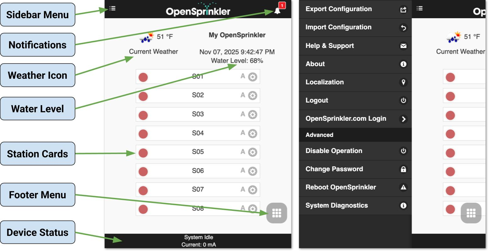
La homepage fornisce una panoramica di tutte le zone, dello stato corrente del sistema e delle condizioni meteo. Si vedranno un'icona meteo, l'ora del dispositivo, il livello acqua, un elenco di zone che mostra lo stato corrente e lo stato del dispositivo in basso.
- L'icona campanella 🔔 (in alto a destra) appare quando sono disponibili notifiche.
- L'icona menu ☰ (in alto a sinistra) apre il menu laterale.
Menu laterale
Aprire il menu laterale
Aprire il menu laterale in qualsiasi momento scorrendo da sinistra a destra, oppure toccare l'icona ☰ nell'angolo in alto a sinistra.
- Manage Sites: gestisce più controller (disponibile nell'app mobile).
- Export/Import Configuration: salva o ripristina tutte le impostazioni e i programmi. Usarlo prima di aggiornamenti firmware o reset di fabbrica.
- About: mostra versione app, versione firmware e versione hardware.
- Localization: cambia la lingua di visualizzazione.
- OpenSprinkler.com Login: (opzionale) accedere con le credenziali dell'account OpenSprinkler.com per abilitare funzioni sincronizzate con il cloud come foto delle stazioni, note, configurazioni dei siti.
- Disable Operation: disabilita le operazioni delle zone. Usarlo quando il sistema rimarrà inattivo per un periodo prolungato.
- Change Password: cambia la password del dispositivo.
- Reboot OpenSprinkler: esegue un riavvio software.
- Diagnostica di sistema: visualizza dati diagnostici dettagliati, inclusi timestamp e motivo dell'ultimo riavvio, ultima chiamata meteo, codice di risposta, dati meteo e stato della connessione OpenThings Cloud (OTC).
Stato del dispositivo
Il piè di pagina riporta lo stato del sistema, dando priorità alle seguenti informazioni nell'ordine:
- Stato di abilitazione/disabilitazione del sistema
- Stazioni attualmente in esecuzione
- Stato Pause Queue / Rain Delay attivo
- Se inattivo, la stazione Last Run, oppure System Idle se tali dati non sono disponibili.
Dati aggiuntivi da visualizzare:
- Se il sensore di flusso è abilitato → Portata corrente.
- Se una qualsiasi zona è attiva → Assorbimento totale di corrente (utile per diagnosticare i solenoidi).
- Se viene rilevata sovracorrente → un avviso di sovracorrente.
Schede stazione
Ogni zona (stazione) viene mostrata come una scheda. Toccare l'icona ingranaggio ⚙️ accanto al nome di una zona per aprire la finestra Attributi.
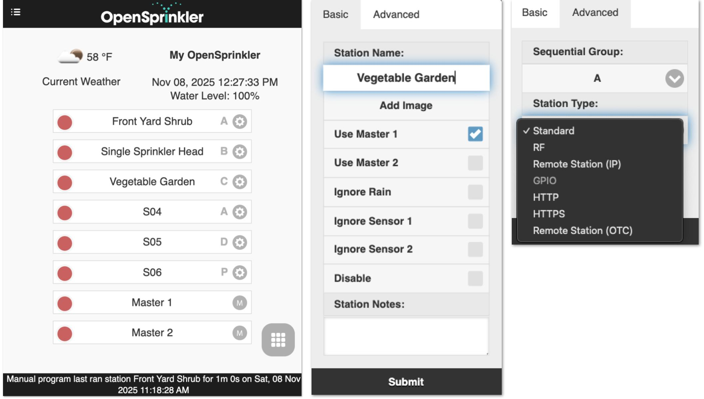
Scheda Basic:
- Station Name: un nome personalizzato (fino a 32 lettere).
Annotazione: se un sensore di flusso è abilitato (vedere Configurazione sensori) e le ultime 5 lettere rappresentano un valore numerico, una notifica Flow Alert verrà attivata quando la portata supera questo valore dopo il termine della zona. Esempio: il nome stazione è Front Yard 1.357, un avviso di flusso si attiverà se la portata>1.357dopo il termine della zona. - Use Masters: se abilitato, le zone master associate, se definite, si attiveranno ogni volta che questa zona è in esecuzione.
- Ignore Rain/Sensor1/Sensor2: se abilitato, la zona ignorerà ritardo pioggia manuale o sensori. Non selezionato per impostazione predefinita.
- Disable: disabilita e nasconde questa zona. Per mostrarla di nuovo, usare il Menu piè di pagina.
Scheda Advanced:
-
Sequential Group: assegna la zona a un gruppo Sequential (
A-D) o al gruppo Parallel (P). L'etichetta del gruppo della zona appare accanto al suo nome sulla homepage.- Per impostazione predefinita, tutte le zone appartengono al gruppo A.
- Le zone nello stesso gruppo sequenziale vengono serializzate automaticamente – due zone non funzionano mai contemporaneamente.
- Le zone in gruppi diversi possono funzionare contemporaneamente.
- Le zone parallele (P) possono funzionare insieme a qualsiasi altra zona.
- L'attributo gruppo sequenziale sostituisce il vecchio flag Sequential per zona, offrendo un controllo della concorrenza più flessibile.
-
Station Type (zona virtuale): configura proprietà speciali affinché una stazione possa controllare dispositivi o azioni oltre a una valvola di irrigazione standard. Questi tipi di stazione speciali/virtuali NON consumano un'uscita fisica - possono essere definiti liberamente fino al numero massimo di zone del controller, anche senza espansori di zona.
- Standard (predefinito): zona di irrigazione normale.
- RF: controlla prese di alimentazione RF (Radio Frequency) remote tramite un trasmettitore esterno (richiede RFtoy per l'apprendimento del codice), permettendo di commutare dispositivi elettrici come luci natalizie, riscaldatori, pompe.
- Remote Station (IP): attiva una zona su un altro OpenSprinkler usando IP, porta e indice di zona (entrambi i controller devono condividere la stessa password dispositivo).
- Remote Station (OTC): come sopra, ma identifica il controller remoto tramite il suo token OpenThings Cloud, ideale per gestire dispositivi su reti diverse. Anche in questo caso, entrambi i controller devono condividere la stessa password.
- GPIO: commuta direttamente un pin GPIO disponibile sul controller (Active High/Low configurabile). Questo tipo è disabilitato per i controller che non hanno pin GPIO disponibili.
- HTTP: invia una richiesta HTTP GET all'attività della zona. Fornire un
server(nome dominio o IP),porte il comandoon/off(escludendo la barra iniziale/). All'attivazione della zona inviaserver:port/on_command, e alla disattivazioneserver:port/off_command. - HTTPS: uguale a HTTP, ma usando una connessione sicura.
Funzioni sincronizzate con il cloud

Dopo l'accesso con il proprio account OpenSprinkler.com (tramite il menu laterale), diventano disponibili ulteriori funzioni sincronizzate con il cloud:
- Foto e note delle stazioni: acquisire e assegnare immagini e note personalizzate a ogni zona.
- Sincronizzazione configurazione sito: memorizzare e ripristinare automaticamente l'elenco dispositivi e le impostazioni tra dispositivi, rendendo semplice gestire più controller.
Menu piè di pagina
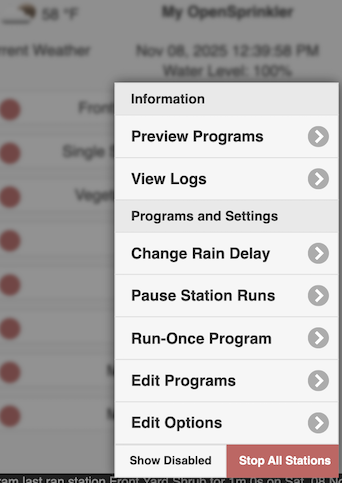
Il menu piè di pagina è disponibile su tutte le pagine dall'angolo in basso a destra (icona griglia #️⃣), fornendo accesso rapido alle azioni comuni:- Preview Programs (oppure scorciatoia da tastiera
Alt+V) - View Logs (
Alt+L) - Change Rain Delay (
Alt+D) - Pause Station Runs (
Alt+U) - Run-Once Program (
Alt+R) - Edit Programs (
Alt+P) - Edit Options (
Alt+O) - Stop All Stations
- Show/Hide Disabled (disponibile sulla homepage):
commuta la visibilità delle zone disabilitate.
Suggerimento: su computer portatili/desktop, è possibile aprire il menu anche premendo M.

Avviare / fermare manualmente una zona
Per avviare manualmente una zona, fare clic sulla sua scheda stazione e inserire un tempo di esecuzione. Se un'altra zona nello stesso gruppo sequenziale è attualmente in esecuzione, appare una casella "Run immediately" che consente di scegliere se eseguire questa zona ora (e mettere in pausa le altre zone nel gruppo), oppure accodare questa zona dopo la fine delle altre.
 Per fermare una zona attualmente in esecuzione o in coda, fare clic sulla sua scheda zona e confermare.
Se ci sono altre zone in coda nello stesso gruppo sequenziale, appare una casella "Move up remaining stations" che consente di scegliere se spostare in avanti tutte le zone rimanenti in quel gruppo, in modo che la successiva inizi immediatamente invece di attendere l'orario originariamente programmato.
Per fermare una zona attualmente in esecuzione o in coda, fare clic sulla sua scheda zona e confermare.
Se ci sono altre zone in coda nello stesso gruppo sequenziale, appare una casella "Move up remaining stations" che consente di scegliere se spostare in avanti tutte le zone rimanenti in quel gruppo, in modo che la successiva inizi immediatamente invece di attendere l'orario originariamente programmato.
Modificare il ritardo pioggia
Usare Change Rain Delay nel menu piè di pagina per impostare un ritardo pioggia personalizzato (in ore). Le zone interessate si fermano immediatamente e restano spente finché il ritardo scade. Per annullare un ritardo pioggia attivo: fare clic sulla barra di stato nel piè di pagina, oppure impostare un tempo di ritardo pioggia pari a 0.
Mettere in pausa le esecuzioni delle stazioni
Questa funzione arresta temporaneamente tutte le zone attive e in coda:
- Le zone in esecuzione si fermano immediatamente e riprendono automaticamente quando il timer di pausa raggiunge 0.
- Gli orari di avvio delle zone in coda vengono spostati di conseguenza.
- I programmi il cui orario di avvio cade nella finestra di pausa vengono accodati e ritardati fino al termine della pausa.
- Durante la pausa, il piè di pagina mostra lo stato della pausa.
Per modificare o annullare una pausa attiva:
- Fare clic sulla barra di stato nel piè di pagina, oppure
- Usare Menu piè di pagina → Change Pause.
Fermare tutte le zone
Termina immediatamente tutte le zone e svuota la coda di esecuzione.
Modifica opzioni
Fare clic su Menu piè di pagina → Edit Options (oppure premere Alt+O) per configurare le impostazioni:
Impostazioni di sistema
- Location: toccare Location per aprire la mappa e cercare il proprio indirizzo; oppure fare clic sull'icona matita ✏️ per inserire manualmente le coordinate GPS.
- PWS location: quando si usa WUnderground (WU) come provider di dati meteo, è necessario selezionare una posizione Personal Weather Station (PWS).
- Inserire e inviare prima una chiave API WU valida nella scheda Meteo e sensori.
- Tornare all'impostazione Location - i siti PWS disponibili appariranno come punti blu sulla mappa.
- Fare clic su uno dei punti blu come propria posizione PWS.
- PWS location: quando si usa WUnderground (WU) come provider di dati meteo, è necessario selezionare una posizione Personal Weather Station (PWS).
- Time Zone: fuso orario e DST vengono rilevati automaticamente in base alla posizione (tramite interrogazioni meteo; richiede Internet), quindi questo elenco a discesa è disattivato per impostazione predefinita.
- Per sovrascrivere manualmente, cancellare il campo Location toccando l'icona croce ✖️ accanto ad esso – quindi l'elenco a discesa del fuso orario diventa modificabile.
- Enable Logging: memorizza i dati di log nella memoria flash interna (abilitato per impostazione predefinita).
Impostazioni app
Queste impostazioni vengono memorizzate/cache nell'app/interfaccia. Non influenzano il controller.
- Use Metric / 24-Hr Time: imposta il sistema di unità preferito (imperiale o metrico) e il formato orario (12 ore o 24 ore). Predefinito su rilevamento automatico.
- Orders Stations by Groups / Names: personalizza come le zone vengono ordinate sulla homepage (anziché solo per indice di zona).
- Show Disabled: commuta la visibilità di stazioni e programmi disabilitati.
- Show Station Number: visualizza l'indice numerico di ogni zona accanto al nome.
Configurare master
Questo firmware supporta fino a due master indipendenti, ciascuno configurabile come segue:
- Master Station: seleziona una zona che agisca da master (relè pompa). Può essere designata qualsiasi zona. Una zona master si attiva insieme alle altre zone.
- Master On Adjustment: regola finemente il tempo di attivazione master (
−600a+600secondi, a passi di5secondi). Esempi:+15→ il master si accende15secondi dopo l'avvio di una zona associata.-60→ il master si accende60secondi prima dell'avvio di una zona.
- Master Off Adjustment: simile a sopra, ma per il tempo di disattivazione del master.
Gestione stazioni
- Number of Stations: OpenSprinkler rileva automaticamente le zone disponibili (inclusi gli espansori), ma gli utenti devono configurare manualmente questo numero - è consentito superare le zone fisiche per includere zone virtuali (vedere Tipo stazione). Predefinito:
8zone. - Station Delay: intervallo tra zone consecutive (
−600a+600s, a passi di 5 secondi). Predefinito:0(nessun ritardo). Esempi:+60→ la zona successiva inizia1minuto dopo la fine della precedente.-15→ la zona successiva inizia15secondi prima della fine della precedente (cioè le due zone si sovrappongono di15secondi). Utile per gestire problemi di limitazione della portata d'acqua.
Regolazione meteo
- Adjustment Method: seleziona un metodo di regolazione basato sul meteo.
- Manual (predefinito): imposta manualmente % Watering.
- Altri metodi calcolano automaticamente le regolazioni. Spiegazioni dettagliate dei metodi supportati sono disponibili su OpenSprinkler Support.
- Adjustment Method Options: configura i parametri per il metodo selezionato.
- Adjust Interval Programs using Multi-Day Average: questa opzione è disponibile per i metodi Zimmerman o ETo. Abilitarla consente a tutti i programmi a intervallo di applicare il livello medio di irrigazione sull'intervallo del programma, anziché solo quello del giorno precedente. Ad esempio, un programma che viene eseguito ogni
4giorni usa la media di 4 giorni. Per i programmi che non vengono eseguiti quotidianamente, questo fornisce regolazioni più accurate che riflettono tutti i cambiamenti meteo dall'ultima esecuzione.- Si applica solo se il flag Use Weather è abilitato per quel programma.
- Limitato dai dati storici del provider (ad es. Apple =
10giorni). Se la lunghezza dell'intervallo supera i dati meteo disponibili, viene usato l'intervallo massimo disponibile. - L'array delle medie multi-giorno viene mostrato in Diagnostica di sistema.
-
Weather Restrictions: disponibile per tutti i metodi di regolazione (incluso Manual):
- Rain: salta l'irrigazione se Total Forecast Rain > una quantità impostata su un numero di giorni definito dall'utente (ad es.
0.5innei prossimi3giorni). Impostare uno dei due valori a0disabilita questa regola.
La capacità di previsione è limitata dal provider meteo selezionato (Apple =10giorni). Se il numero di giorni di previsione supera i dati, viene usato l'intervallo massimo disponibile. - Temperature: salta l'irrigazione se Current Temperature < un valore impostato (ad es.
50°Fo10°C). Un valore di-40(sia °F sia °C) disabilita questa regola. - California Rule: regola legacy che salta l'irrigazione se
>0.1"di pioggia nelle ultime48ore. - Le restrizioni meteo attive appaiono sia sulla homepage sia in Diagnostica di sistema.
- Rain: salta l'irrigazione se Total Forecast Rain > una quantità impostata su un numero di giorni definito dall'utente (ad es.
-
Weather Data Provider: scegliere il provider di dati preferito. Predefinito: Apple.
- Se il provider richiede una chiave API, appare una casella di input per la chiave.
- Alcuni provider hanno limiti regionali (ad es. DWD = solo Germania; WU richiede posizione PWS).
- % Watering: fattore di scala globale applicato ai tempi di irrigazione. Predefinito:
100%.- Modificabile solo per il metodo di regolazione Manual (poiché gli altri lo calcolano automaticamente).
- Esempio:
75%→ moltiplica tutti i tempi di irrigazione delle stazioni per 0.75. - Si applica solo ai programmi in cui il flag Use Weather è abilitato.
Configurazione sensori
OpenSprinkler supporta due sensori indipendenti (SN1, SN2) con tipi configurabili: Rain, Soil (solo uscita binaria), Program Switch e Flow (attualmente supportato solo su SN1).
-
Connessioni:
- I due fili di segnale del sensore devono essere collegati a SN1 + GND (oppure SN2 + GND).
- NON collegare alcun filo di segnale a COM, perché potrebbe danneggiare il controller.
- Se il sensore richiede alimentazione +5V (ad es. alcuni sensori di flusso), usare la porta +5V (VIN) per alimentarlo.
- Se il sensore richiede alimentazione 24VAC (ad es. sensori wireless), collegare i suoi fili di alimentazione a COM e GND (solo modello alimentato in AC; i modelli DC/Latch NON possono fornire 24VAC).
- Per OpenSprinkler v3.4:
SN3,SN4sono riservati per uso futuro e attualmente non abilitati.
-
Sensore pioggia / suolo: ferma automaticamente le esecuzioni delle zone quando viene rilevata pioggia o elevata umidità del suolo.
- Scegliere Normally Open o Normally Closed (tipo più comune).
- Supporta solo sensori che emettono segnali binari ON/OFF (interruttori a contatto pulito).
- Per sensori analogici, usare un adattatore analogico-digitale, che converte un segnale analogico in ON/OFF con soglia regolabile.
- Delayed On: tempo per cui il sensore deve restare attivo prima dell'attivazione (previene falsi trigger).
- Delayed Off: tempo di mantenimento dopo la disattivazione del sensore (prolunga il mantenimento del sensore). Esempi:
Delayed On di 10 minuti → il sensore è considerato attivato dopo essere rimasto attivo per 10 minuti.
Delayed Off di 30 minuti → il sensore è considerato disattivato dopo essere rimasto inattivo per 30 minuti.
- Program Switch: usare un interruttore/pulsante a contatto pulito per avviare un programma.
SN1: avviaProgram 1SN2: avviaProgram 2- Attivato se l'interruttore/pulsante viene premuto per più di 1 secondo.
- Sensore di flusso: rileva impulsi di flusso per misurare la portata in tempo reale e registrare il volume totale di flusso alla fine di ogni esecuzione stazione e ciclo programma.
- Supporta tutti i sensori di flusso a contatto pulito, 2 fili (consigliato).
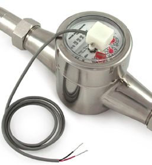
- Collegare i due fili a SN1 + GND.
- Sono essenzialmente reed switch che si aprono e chiudono ripetutamente mentre l'acqua scorre attraverso il misuratore. Non richiedono alimentazione e i due fili non hanno polarità.
- Supporta anche sensori di flusso 3 fili che funzionano con +5V.
- Cablaggio:
GND(nero) aGND,5V(rosso) a+5V(VIN), Data (giallo) aSN1.
- Cablaggio:
- Flow Pulse Rate: si trova nel datasheet del sensore di flusso.
- Usato per convertire il conteggio degli impulsi di flusso nel volume d'acqua effettivo.
- La precisione è limitata a 2 cifre decimali (decimali aggiuntivi scartati).
- Se è necessaria maggiore precisione, scalare il tasso di un fattore
10. - Si consiglia di mantenere
L/pulsecome unità (anche se il datasheet specifica Gallon/pulse) - l'unità è solo per visualizzazione.
- A causa dell'implementazione software, la frequenza dei click del flusso NON deve superare
50Hz, poiché frequenze più alte possono causare imprecisioni.
- Supporta tutti i sensori di flusso a contatto pulito, 2 fili (consigliato).
Integrazione
- OTC: configura il token OpenThings Cloud (OTC) per l'accesso remoto. Vedere articolo di supporto OTC.
- MQTT: configura i parametri MQTT. Vedere articolo di supporto MQTT.
- Email Notifications: configura le impostazioni email. Vedere articolo di supporto Email Notifications.
- IFTTT: configura la chiave IFTTT Webhooks. Vedere articolo di supporto IFTTT.
-
Notification Events: seleziona gli eventi che attivano notifiche MQTT/Email/IFTTT.
Evitare troppi eventi
Abilitare troppi eventi o metodi di notifica può causare ritardi significativi, risposte mancate o persino cicli di irrigazione brevi saltati.
-
Device Name: un nome personalizzato per questo controller, mostrato sulla homepage e incluso nei messaggi di notifica, per aiutare a identificare il controller.
Schermo LCD
- Idle Brightness: imposta la luminosità LCD quando il controller è inattivo.
- Ridurla aiuta a prolungare la durata del LCD.
- Impostare a
0spegnerà completamente il LCD quando inattivo. - Premere qualsiasi pulsante riattiva il LCD.
Impostazioni avanzate
- HTTP Port: cambia la porta HTTP del dispositivo. Predefinito:
80. - Undercurrent Threshold: attiva una notifica di sottocorrente se l'assorbimento di corrente (
mA) di una zona scende sotto questo valore alla fine della sua esecuzione (ad es. filo interrotto o solenoide guasto). Predefinito:100 mA.- Il valore ideale è metà della corrente di mantenimento tipica del solenoide.
- Impostare a
0per disabilitare questo rilevamento.
- Overcurrent Limit: attiva un avviso di sovracorrente se l'assorbimento di corrente (
mA) in qualsiasi momento supera questo valore (ad es. a causa di solenoidi in corto, cablaggio difettoso o troppe zone in esecuzione contemporaneamente).- Se rilevato all'avvio di una zona, la zona interessata si spegne immediatamente.
- Se rilevato durante l'esecuzione (cioè sovracorrente di sistema), tutte le zone attive si spengono immediatamente.
- L'avviso appare su LCD, UI/App, e viene inviato a tutti i canali di notifica abilitati.
- Una volta scattato, il controller può continuare a eseguire programmi e zone (finché non attivano di nuovo la sovracorrente), ma l'avviso persiste finché viene cancellato (facendo clic sul messaggio nella barra di stato), oppure quando il controller viene riavviato.
- Impostare a
0per usare il valore predefinito di sistema. - Impostare a
2550(max) per disabilitare questa funzione (NON consigliato, poiché disabilitarla espone il controller a potenziali danni da sovracorrente). - Per diagnosticare la causa della sovracorrente, eseguire un test di resistenza del solenoide.
- Questa funzione è disponibile solo su OpenSprinkler v2.3 e v3.x alimentati in AC/DC (altri controller come OSPi non dispongono di capacità di rilevamento corrente).
- Boost Time (solo modelli DC/Latch): durata del boost di tensione (
0-1000ms). Predefinito:320ms.- Aumentare quando si usa un adattatore DC debole/a bassa corrente che richiede più tempo per aumentare la tensione.
- Target PD Voltage (solo DC v3.4): imposta la tensione USB-C PD (Power Delivery) desiderata.
- Impostare a
0per usare il valore predefinito di sistema. - Il valore ideale è la corrente di mantenimento del solenoide moltiplicata per la sua resistenza della bobina (ad es.
0.25 A × 30 Ω = 7.5 V). La corrente di mantenimento è indicata nel datasheet del solenoide; la resistenza della bobina può essere misurata con un multimetro. - Questa opzione viene mostrata solo quando l'alimentatore supporta PD, PPS o AVS.
- La Actual Voltage (mostrata sotto il nome dell'opzione) è la tensione supportata più vicina che l'adattatore può fornire per corrispondere al valore target.
- Impostare a
- Latch On/Off Voltages (solo modello Latch): personalizza le tensioni di boost per attivare e disattivare solenoidi bistabili. Massimo:
24V. - NTP IP Address: server NTP personalizzato per la sincronizzazione dell'ora. Impostare a
0.0.0.0per usare i valori predefiniti di sistema. - Ignore Password: se abilitato, accetta qualsiasi password dispositivo (cioè bypassa la password).
- Special Station Auto-Refresh: reinvia periodicamente comandi alle stazioni virtuali (RF/Remote/HTTP) per mantenerle sincronizzate con il controller principale.
- NTP Sync: sincronizza automaticamente l'ora del dispositivo in base alla posizione.
- Per regolare manualmente l'ora, disabilitare questa opzione, quindi Device Time diventa modificabile.
- Use DHCP: ottiene automaticamente l'IP dal router usando DHCP.
- Si consiglia di mantenere questa opzione abilitata.
- Se si preferisce un'assegnazione IP fissa, usare la prenotazione DHCP del router (associazione IP-Mac). Disabilitare DHCP solo se il router non supporta la prenotazione DHCP.
- Se disabilitato, è NECESSARIO inserire manualmente un IP statico, insieme a Gateway, Subnet, DNS. Tutti devono essere impostati correttamente affinché il controller funzioni correttamente.
Reset
- Clear Log Data: cancella tutti i log memorizzati.
- Reset All Options: ripristina tutte le opzioni ai valori di fabbrica.
- Delete All Programs: cancella tutti i programmi.
- Reset Station Attributes: ripristina tutte le impostazioni delle stazioni ai valori di fabbrica.
- Reset Wireless (solo v3): reset in modalità WiFi AP per riconfigurare il WiFi.

Programma Run-Once
Usare Menu piè di pagina -> Run-Once Program (Alt+R) per avviare manualmente un programma una tantum. Qui è possibile caricare tempi di esecuzione predefiniti da un programma esistente, creare rapidamente un programma di test, o inserire manualmente il tempo di esecuzione per ogni stazione.
- Vengono applicati tutti gli attributi stazione pertinenti (ad es. Use Master, Sequential Group, Station Delay, Master On/Off Adjust).
- Scegliere se applicare l'attuale % Watering.
- Se si imposta il programma su Repeat, il sistema crea automaticamente un programma a esecuzione singola.
- Se le zone sono già in esecuzione, appare un'opzione di pianificazione per scegliere come accodare il nuovo programma:
- Append: esegui dopo le zone esistenti
- Insert to Front: esegui ora e metti in pausa le altre
- Replace: esegui ora e annulla le altre
Suggerimento 1 - Avviare un programma usando i pulsanti del controller
Se è necessario concedere a qualcuno l'accesso al controller senza WiFi, è possibile avviare un programma sul controller usando i suoi pulsanti: premere e tenere premuto B3 finché appare Run a Program, toccare B3 per navigare tra i programmi disponibili, quindi premere e tenere premuto B3 per avviarlo.
Suggerimento 2 - Creare un programma solo manuale
È possibile creare un programma che non viene eseguito da solo ma rimane disponibile per Run-Once Program e tramite attivazione da pulsante. Per farlo: creare un nuovo programma e impostarlo come Disabled.
Programmi
OpenSprinkler supporta fino a 40 programmi. Usare Menu piè di pagina -> Edit Programs (Alt+P) per accedere all'elenco programmi. Da qui è possibile: aggiungere, modificare, copiare, eliminare, eseguire manualmente o riordinare i programmi (usando l'icona freccia ⬆️).

Dati del programma
Fare clic su Add ➕ nell'angolo in alto a destra per creare un nuovo programma. Ogni programma include:
Impostazioni di base:
- Program Name: fino a 32 caratteri. (Vedere Annotazioni nome programma per i suffissi supportati).
- Enabled: abilita/disabilita il programma.
- Use Weather Adjustment: applica regolazioni basate sul meteo, incluse % Watering corrente, Weather Restrictions e Multi-day Averaging (solo per programmi Interval).
- Enable Date Range: limita il funzionamento del programma a un intervallo di date. Esempi:
05/15-09/15: dal 15 maggio al 15 settembre.11/10-02/20: dal 10 novembre al 20 febbraio (dell'anno successivo).
- Start Time: il primo orario di avvio (ad es.
8:15 AM). Supporta anche l'uso degli orari di Sunrise o Sunset con offset opzionali.
Tipo di programma:
- Weekly: esegui nei giorni della settimana selezionati.
- Interval: esegui ogni
Ngiorni (1-128).- Starting in: l'offset relativo a oggi:
0= oggi,1= domani, fino aN-1. - Il livello di irrigazione Multi-day Average si applica a questo tipo.
- Starting in: l'offset relativo a oggi:
- Single-Run: un programma una tantum che si auto-elimina al completamento.
- Monthly: esegui in un giorno specifico di ogni mese:
1= 1° giorno,0= ultimo giorno. - Restrizioni:
- Odd-day: esegui solo nei giorni dispari (salta il 31 e il 29 febbraio).
- Even-day: esegui solo nei giorni pari.
Tempi di irrigazione stazione: impostare il tempo di esecuzione per stazione, da 1 secondo a 64800 secondi (18 ore).
Supporta anche l'uso della durata sunrise-to-sunset o sunset-to-sunrise come tempo di esecuzione.
Orari di avvio aggiuntivi: due opzioni per orari/cicli di avvio extra:
- Fixed: fino a 3 cicli extra a qualsiasi ora specificata del giorno.
- Repeating: ripeti a intervalli regolari (ad es. ogni 45 minuti per 8 cicli extra).
Utile per suddividere lunghe durate di irrigazione in cicli più brevi (cycle and soak).
Gli orari di avvio ripetuti possono anche proseguire durante la notte nel giorno successivo.
Annotazioni nome programma
I nomi dei programmi possono includere annotazioni per personalizzare l'ordine di esecuzione delle stazioni o attivare azioni speciali.
Annotazione ordine stazioni Per impostazione predefinita, un programma esegue le stazioni in ordine crescente per indice (dal più basso al più alto). Per modificare questo comportamento, aggiungere al nome del programma un > seguito da una delle seguenti lettere.
I: decrescente per indice stazione (dal più alto al più basso)n: crescente per nome stazioneN: decrescente per nome stazioner: ordine casualea: alterna crescente/decrescente per indiceA: alterna decrescente/crescente per indicet: alterna crescente/decrescente per nomeT: alterna decrescente/crescente per nome
Esempio: un programma chiamato Summer Garden >t esegue le stazioni in ordine crescente di nome la prima volta, decrescente la successiva, e alterna a ogni esecuzione successiva.
La Anteprima programma riflette tutte le annotazioni del nome, consentendo una facile verifica dell'ordine di esecuzione desiderato. Anche le esecuzioni manuali dei programmi rispettano queste annotazioni.
Annotazione riavvio: nomi di programma speciali per attivare riavvii automatici a intervalli regolari:
:>reboot: riavvia quando il controller diventa inattivo (nessuna zona in esecuzione).:>reboot_nowriavvio immediato, indipendentemente dall'attività delle zone.
Entrambe le azioni sono ritardate di un minuto rispetto all'orario di avvio programmato per prevenire una riattivazione immediata subito dopo il riavvio. Quando si crea il programma deve essere inclusa almeno una zona con durata diversa da zero, anche se in realtà non verrà eseguita alcuna zona. Esempio: un programma chiamato :>reboot che inizia ogni giorno alle 2:00 AM riavvierà il controller a quell'ora ogni giorno.
Anteprima programma
Per verificare che tutti i programmi siano impostati correttamente, usare Menu -> Preview Programs per visualizzarli.
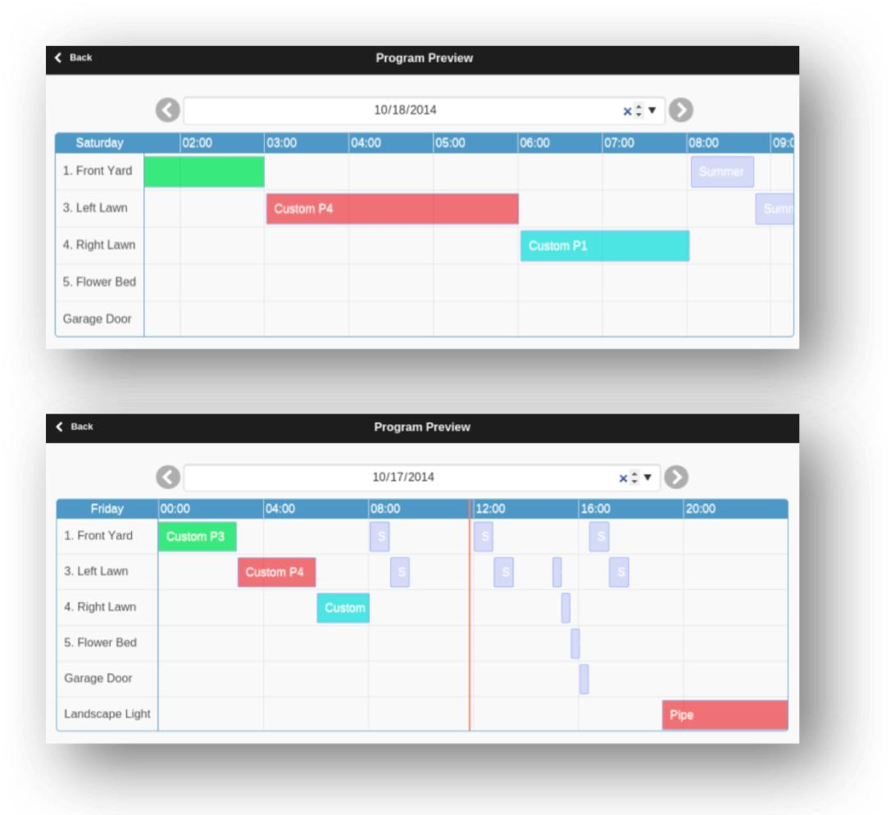
- La programmazione di oggi viene mostrata per impostazione predefinita; usare le frecce ⬅️ / ➡️ per esplorare altri giorni.
- L'ora corrente viene mostrata come linea verticale rosa. È possibile fare zoom o trascinare il grafico per visualizzare finestre temporali diverse.
- Le barre colorate rappresentano il tempo di esecuzione e il nome programma di ciascuna stazione; facendo clic su una barra si apre l'editor del programma corrispondente.
Accuratezza della simulazione: l'anteprima usa una simulazione dello stesso algoritmo di pianificazione del firmware del controller, tenendo pienamente conto di impostazioni come zone master, Station Delay, Master On/Off Adjustments e Sequential Groups.
Meteo ed eventi dinamici:
- Rain Delay e Sensors vengono ignorati (dipendono da condizioni in tempo reale).
- I programmi impostati su Use Weather Adjustment vengono scalati in base all'attuale % Watering:
- Manual: la stessa % Watering si applica a tutti i giorni dell'anteprima.
- Zimmerman/ETo: l'attuale % Watering si applica solo a oggi; tutti gli altri giorni assumono 100% (dipendono da condizioni in tempo reale non prevedibili in anticipo).
- Weather Restrictions e Multi-day Averages si applicano solo alla programmazione di oggi.
- Se % Watering < 20%, le stazioni con tempo di esecuzione calcolato inferiore a 10 secondi vengono saltate per evitare periodi di irrigazione molto brevi (coerente con il comportamento del firmware).
Attributo gruppo della zona
OpenSprinkler supporta operazioni di zona sia sequenziali (una dopo l'altra) sia parallele (contemporanee), gestite dall'attributo Sequential Group di ogni zona.
-
Le zone nello stesso gruppo sequenziale funzionano in sequenza (una alla volta). Se una zona è programmata per iniziare mentre un'altra zona nello stesso gruppo è già in esecuzione, verrà automaticamente accodata. Questo è il metodo più comune usato nella maggior parte dei controller di irrigazione, per mantenere la pressione dell'acqua impedendo che più zone funzionino contemporaneamente.
-
Le zone in gruppi sequenziali diversi possono funzionare contemporaneamente (in parallelo). Esempio: se le zone 1–3 sono nel gruppo
A, e 4–6 nel gruppoB, possono funzionare in parallelo. -
Gruppo parallelo: funziona indipendentemente da tutte le altre zone, utile per luci, pompe, riscaldatori o altri dispositivi non di irrigazione (che possono funzionare in parallelo).
NOTA: i firmware precedenti usavano un singolo flag Sequential per tutte le zone, che di fatto metteva tutte le zone in un unico gruppo sequenziale. Quel flag è stato sostituito qui dal sistema multi-gruppo, che offre maggiore flessibilità consentendo più gruppi indipendenti.
Log
OpenSprinkler supporta la registrazione, che salva attività zone, ritardi pioggia, eventi sensore, volumi di flusso e modifiche % Watering nella sua flash interna. Per visualizzare i log:

- Usare Menu piè di pagina → View Logs (
Alt+L) per visualizzare un grafico dei dati registrati. - Usare la scheda Options per selezionare una data di inizio e fine (predefinito: ultimi 7 giorni).
Per dataset grandi o caricamento lento, limitare l'intervallo a un singolo giorno. - Fare clic su Table in alto per passare alla vista tabellare.
Per dettagli sul formato dei dati di log e script di esempio per esportare i log (ad es. come fogli di calcolo), consultare la documentazione API OpenSprinkler.
Aggiornamento firmware
OpenSprinklerPro OTA online
OpenSprinklerPro usa Menu laterale → Online Update. Il dialogo controlla il manifesto, crea un backup, sceglie la variante firmware corretta e mostra il progresso. È il percorso consigliato per OpenSprinklerPro e build ESP32-C5.
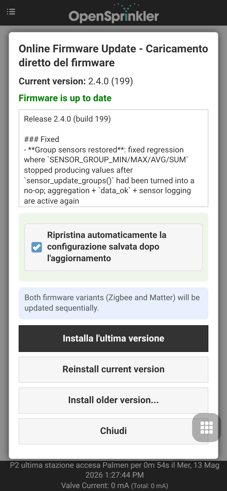
Per dettagli su backup, varianti firmware e piattaforme, vedere OpenSprinklerPro OTA online.
OpenSprinkler v3.x
Il firmware OpenSprinkler v3.x classico si aggiorna tramite la pagina upload integrata:
- Esportare prima la configurazione dal menu laterale.
- Scaricare il file firmware
.binadatto. - Aprire
http://<controller-ip>/update. - Selezionare il file, inserire la password dispositivo e inviare.
- Attendere il riavvio del controller.
In modalità WiFi AP, collegarsi all’AP del controller e aprire http://192.168.4.1/update.
OpenSprinkler v2.3
OpenSprinkler v2.3 richiede un cavo USB per gli aggiornamenti firmware. Seguire le vecchie istruzioni di aggiornamento v2.3.
OpenSprinkler Pi (OSPi)
OSPi si aggiorna direttamente sul Raspberry Pi tramite shell/Git/script di build, non tramite il dialogo web OTA del firmware. Seguire le istruzioni OSPi.
Link e risorse
- Homepage OpenSprinkler
- Sito di supporto OpenSprinkler
- Documentazione OpenSprinkler
- Github OpenSprinkler
Specifiche
| OpenSprinkler v3 | OpenSprinkler Pi (OSPi) | |
|---|---|---|
| Tensione di ingresso: | modello AC: 22-28V AC DC/Latch: 6V-24V DC |
22-28V AC |
| Assorbimento: | 0.5-0.9 W | 0.5 W + assorbimento del RPi |
| Num. di zone: | Controller principale: 8; espandibile a 72 |
Controller principale: 8; espandibile a 200 |
| Driver solenoide: | AC: 1 A/zona (triac) DC: 2 A/zona (MOSFET) Latch: 6A istantanei/zona |
1 A/zona (triac) |
| Dimensioni: | v3.0-3.3: 140×56×33 mm v3.4: 125×79×25 mm |
135×105×38 mm |
| Peso: | 140 g (5 oz) | 200 g (7 oz) |
| Espansore: | 130×75×25 mm / 100 g (4 oz) | 130×75×25 mm / 100 g (4 oz) |
Argomenti avanzati
Installazione del trasmettitore RF
OpenSprinkler supporta trasmettitori RF (Radio Frequency) standard a 434 MHz e 315 MHz, consentendogli di controllare prese di alimentazione remote per dispositivi elettrici commutati come luci, riscaldatori, ventole e pompe. Per usare stazioni RF:
- Usare un RFToy per acquisire e decodificare i segnali dalle prese di alimentazione remote.
- Ogni codice RF è una stringa esadecimale: a 25 cifre (ad es.
H00003C0300003C3301490118) oppure a 16 cifre (ad es.51001A0100BA00AA), che codifica i comandi on/off e i dati di temporizzazione. - Il kit RFToy include entrambe le coppie trasmettitore/ricevitore 433 MHz e 315 MHz — selezionare quella che corrisponde alle prese remote. Per una migliore portata, saldare un'antenna a filo da
17 cmal pinANTdel trasmettitore (diritta o avvolta).
Collegamento del trasmettitore RF:
- OpenSprinkler v3 / OSPi v2: hanno un header RF a 3 pin integrato. Inserire il trasmettitore RF direttamente in questo header, con il lato componenti verso l'alto (vedere Diagramma interfaccia hardware).
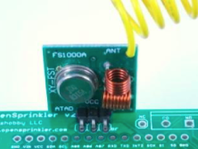
- OSPi v1: nessun header dedicato con involucro, ma sulla PCB sono disponibili piazzole
DATA/VIN/GNDper saldare il trasmettitore a questi pin.
Per passaggi di configurazione dettagliati ed esempi, vedere il post del blog sulle stazioni RF.